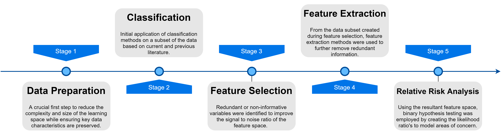
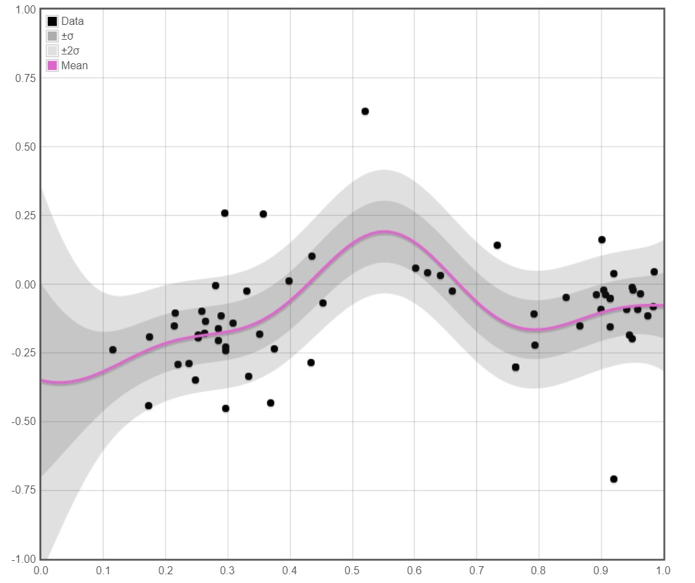
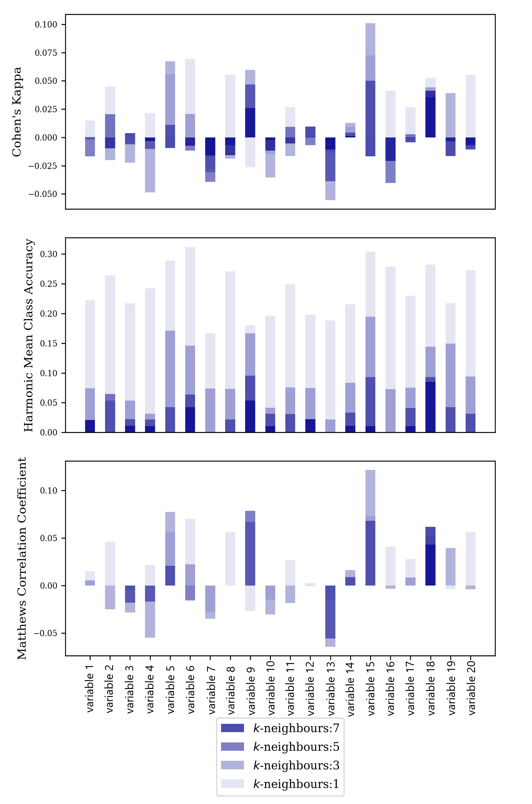
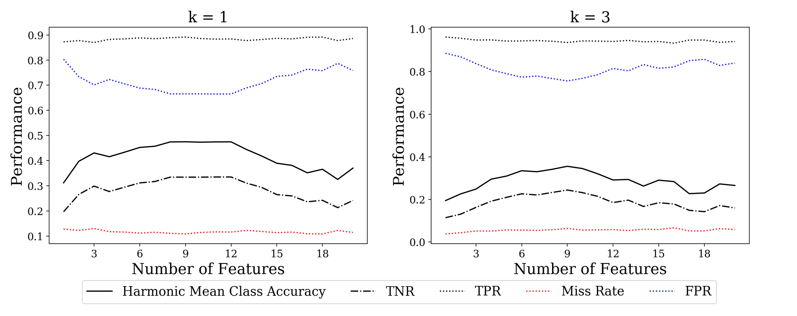
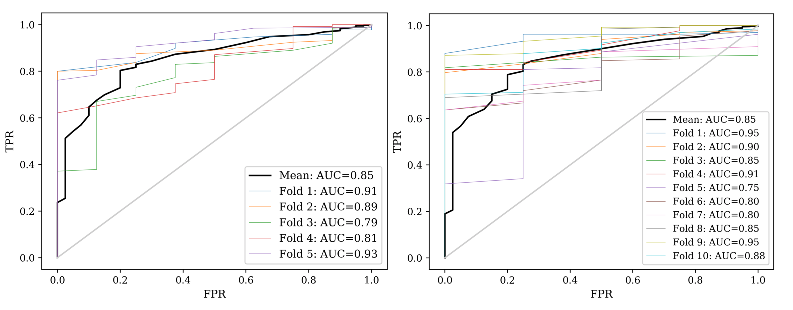

Novelty Detection of Rolls Royce Engine Data
- 1. Data Set Background
- 2. Commercial Incentives
- 3. Project Workflow
- 4. Data Preparation
- 5. Initial Classification Attempts
- 6. Feature Selection
- 7. Relative Risk Analysis
- 8. References
1.1 Data Set Background
Jet engine test data is both high dimensional and very imbalanced. The high complexity and safety critical nature of jet engine design means that faulty behaviour is infrequent, even though engine testing is a rigorous and detailed process. These data set characteristics presented problems with regard to employing common classification methods.
1.2 Commercial Incentives
As this problem was constrained to binary classification, the goal of a given model would be to minimise both false positives and false negatives:
- Minimisation of false negatives during the testing process would reduce investigations from maintenance engineers, hence improving the efficiency of jet engine testing and giving the company a competitive edge.
- Furthermore, minimisation of false positives reduces mis-detections which is potentially of more significance as mis-detections are of greater consequences depending on the reliance placed on the algorithm.
1.3 Project Workflow

1.4 Data Preparation and Pre-processing
The computational demands of analysing complete time series data would've been too great for the time limitations that existed during the project. Therefore, focus was place on steady state conditions by segmenting the time history of signals and sampling at mid-points.
For example, elimination of transient signals was achieved when where the time series, , was smoothed by a 2-sided moving average: , . The threshold was tuned to give distinct segmentation.
1.5 Initial Classification Attempts
A common method to create a regression model to describe normal behaviour was through the use of a Gaussian Process. This is a popular choice for problems that require an unknown function to be constructed from given input data where the confidence of the function’s fit can be expressed with error bars. In general, a GP defines a distribution over functions where we can assume that the output of a function at input can be written as,
where and are referred to as the signal term and the noise term respectively. reflects the uncertainty of the distributions over , and reflects the randomness of the input data by following a Gaussian distribution.
From the relevant literature on novelty detection and industry heuristics, success has been had by analysing vibration sensors data in the different compressor stages of turbines, along with other temperature and pressure sensors, therefore GP regression models were fitted to this subset of variables.

Above is an example of GP regression demonstrated by Chi Feng's regression demoEach GP regression curve was encapsulated by a 95% confidence interval in which the distribution was solely modelled on the data from engines displaying normal behaviour. This confidence interval served as an informal discordancy test to qualitatively assess the performance of constructing a normality model in order to classify faulty data points as outliers.
Classification based on the outlier assumption was shown not to be valid for univariate data. It was concluded that consideration of univariate data was too simple, hence multivariate data would need to be analysed instead. However, in general, inclusion of irrelevant or redundant features only served to make the classification problem more challenging by increasing the dimensionality of the problem, without information gain. This called for data exploration by individua analysis of variables followed by feature selection to identify variables that showed greater discrimatory information.
2. Feature Selection
2.1 Individual Variable Analysis
To rank all variables in the data set, a classification score was used from the k-Nearest Neighbours algorithm, that relies on the assumption that data point belongs to the majority class from k-nearest neighbours where, .
The idea of this was to create a ranked list of discrimatory variables and therefore gain insight into which variables should be the focus of future work. Along with varying k, difference performance metrics were used in order to deal
with class skew to get a better pricture of performance. Testing was achieved using 10-fold stratified cross-validation.

Using k = 1 in the k-NN algorithm allowed for more discriminatory information to be revealed for each of the variables overall. This is because the algorithm was able to correctly classify a particular class to a greater degree than other values of k. However as dimensionality increases, it's performance may not.
The three classification metrics used resulted in very similar variable ranks for a given k, although the definition for Cohen’s Kappa and average class accuracy made it more immune to divide-by-zero errors. For this reason, these two metrics were carried forward for use in Sequential Forward Selection.
2.2 Forward Sequential Selection
Considered as a greedy search algorithm, SFS makes the optimal decision at each stage of the algorithm by repetitively selecting and adding the variable that produces the maximum classification score[22]. This method results in a suboptimal variable subset
but is much faster than the exhaustive search methods. The main problem with SFS is that it is unable to remove redundant variables that may appear as the subset increases in size. Therefore, larger subsets tend to perform worse than
those that are small[13].

2.2 Feature Extraction
Previously, feature selection reduced the number of input dimensions by selecting a subset of variables from the original data set. Feature extraction di↵ers from this in that new features are derived from the original ones, where the new features contain the extract discriminative information from the original ones.
The feature extraction methods used were applied to the feature selection subsets previously obtained, but to cover more possibilities, the subset from a exhaustive search was also used in Principle Component Analysis (PCA) and Fisher’s Linear Discriminant (FLD). For the reasons of confidentiality, the details and results from the methods are skipped.
7. Relative Risk Analysis
This classification work made use of the likelihood ratio in identifying the relative risk of detecting an observation that belongs to a given distribution, in a 2-dimensional space. The analysis utilises hypothesis testing, where a claim about an observation, the null hypothesis, is tested against an alternative hypothesis. Performing this analysis provided a means to check whether the likelihood ratio would exceeded a specified threshold, which would indicate areas of concern, for a given feature space, or subspace. Depending on the threshold, descriptive and nonlinear decision boundaries were formed, which were able to successfully characterised class distributions.
An example of modelling relative risk from a data set of random values.
As shown by the ROC curves below, the log-likelihood model showed relatively good generalised classification performance when evaluated over all thresholds. This is indicated by the AUC metrics displayed in each subplot, where the average value 0.85 from both cross-validations is an improvement on the ROC curve.

7.1. Conclusion
As expected, there existed a mild spread of classification performance with AUC standard deviations of 0.062 and 0.067 for the 5-fold and 10-fold stratified cross-validation respectively. Even though the AUC standard deviations were very similar, this only represented the variation in performance over all thresholds. Visually, the relatively narrow spread of ROC curves in 5-fold compared to 10-fold cross validation shows the importance of generally using a larger number of folds in order to get a better estimate on the generalised performance of the classification methodology. But the greater variation of ROC curves for 10-fold cross validation was likely due to the smaller sample size using during testing. This was particularly influential when the data set was imbalanced which is why large jumps in FPR values can be seen, as there were very few faulty class observations in the test.
However, it should be noted that increased folds meant that the model was more likely to overfit on a given class during training, as there would be a larger training sample size for the k-folds. This meant that the bandwidth selection in kernel density estimation tended to over-emphasise faulty and normal regions due to its sensitivity to sample size. But since a ratio existed, this overfitting was somewhat cancelled out, which explains the generally good classification performance.
8. References
- [22] John D Kelleher, Brian Mac Namee, and Aoife D’arcy. Fundamentals of machine learning for predictive data analytics: algorithms, worked examples, and case studies. MIT Press, 2015.
- [13] Ricardo Gutierrez-Osuna. L11: sequential feature selection. http://research.cs. tamu.edu/prism/lectures/pr/pr l11.pdf. 2019.